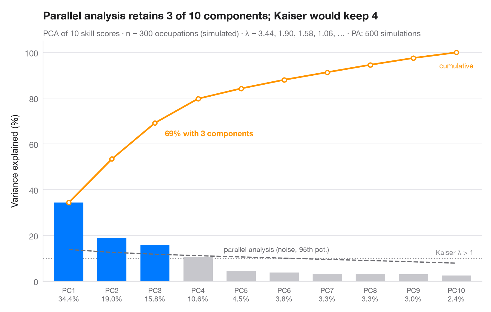

碎石图
300 种职业的数字技能需要几个维度来描述？各主成分方差与平行分析临界线。

值得保留多少个主成分？柱形表示每个主成分承载的方差占比，橙色线为累计占比。灰色虚线是 Horn 平行分析：在同样规模、互不相关的随机数据上计算出的特征值的第 95 百分位数。只有超过这一噪声下限的主成分才会被保留（蓝色）；点线标出较早的 Kaiser 准则（特征值 > 1）。
背景为 Aubert、Bourdeau、Warin、Schneider 和 Sénegas (2026)，“Digital skills assessment in jobs in Canada”（Journal for Labour Market Research）：300 种职业，每种按 10 项数字技能指标评分（办公软件、数据录入、网络搜索、电子邮件、在线协作、社交媒体、内容创作、数据分析、编程、网络安全）。评分由 numpy（固定种子）基于三个潜在技能维度和一个较弱的第四维度模拟，仅作示例，并非该论文的数据或结果。相关矩阵的特征值由 numpy.linalg.eigvalsh 计算；平行分析基于 500 次固定种子的模拟。与常见情形一样，平行分析比 Kaiser 准则更严格：较弱的第四维度满足 λ > 1，却未超过噪声下限。
代码及图中文字均为英文。
import matplotlib.pyplot as plt
import numpy as np
from sklearn.preprocessing import StandardScaler
# Simulated data, set in the context of Aubert et al. (2026) [aubert2026]
# 300 occupations x 10 digital-skill scores driven by 3 latent skills (+ a weak 4th)
rng = np.random.default_rng(2026)
F = rng.normal(size=(300, 4)) # basic office, communication, advanced technical, weak niche
L = np.array([[.8, 0, 0, 0], [.75, 0, 0, 0], [.6, .3, 0, 0], [.5, .5, 0, 0], [.2, .7, .1, .5],
[0, .75, 0, 0], [0, .6, .3, -.5], [.2, 0, .75, 0], [0, 0, .8, 0], [0, .1, .6, .5]])
X = StandardScaler().fit_transform(F @ L.T + rng.normal(0, 0.55, (300, 10)))
n, p = X.shape
eig = np.sort(np.linalg.eigvalsh(np.corrcoef(X.T)))[::-1] # PCA eigenvalues
pct = 100 * eig / eig.sum()
# Horn's parallel analysis: eigenvalues of pure noise, 95th percentile
rng = np.random.default_rng(42)
sims = [np.sort(np.linalg.eigvalsh(np.corrcoef(rng.normal(size=(n, p)).T)))[::-1]
for _ in range(500)]
pa = np.percentile(sims, 95, axis=0)
keep = eig > pa
k = np.arange(1, p + 1)
fig, ax = plt.subplots(figsize=(8, 5))
ax.bar(k, pct, width=0.68, color=np.where(keep, "#007AFF", "#C7C7CC"), zorder=2)
# Cumulative share, parallel-analysis floor and Kaiser threshold (all in % of variance)
cum = np.cumsum(pct)
ax.plot(k, cum, color="#FF9500", marker="o", ms=5, mfc="white", mew=1.5, zorder=3)
ax.annotate(f"{cum[keep.sum() - 1]:.0f}% with {keep.sum()} components",
(keep.sum(), cum[keep.sum() - 1]), xytext=(12, -16), textcoords="offset points",
fontsize=9.5, color="#FF9500", fontweight="semibold")
ax.text(p, cum[-1] - 4, "cumulative", fontsize=8.5, color="#FF9500", ha="center", va="top")
ax.plot(k, 100 * pa / p, color="#6E6E73", ls="--", lw=1.4, zorder=3)
ax.text(4.6, 100 * pa[4] / p + 1.5, "parallel analysis (noise, 95th pct.)", fontsize=8.5,
color="#6E6E73", va="bottom")
ax.axhline(100 / p, color="#8E8E93", ls=":", lw=1.2, zorder=1)
ax.text(p + 0.4, 100 / p + 0.8, "Kaiser λ > 1", fontsize=8.5, color="#8E8E93", ha="right", va="bottom")
ax.set_xticks(k, [f"PC{i}\n{v:.1f}%" for i, v in zip(k, pct)], fontsize=8.5)
ax.set_xlim(0.4, p + 0.6)
ax.set_ylim(0, 105)
ax.set_ylabel("Variance explained (%)")
ax.set_title(f"Parallel analysis retains {keep.sum()} of {p} components; Kaiser would keep "
f"{(eig > 1).sum()}", pad=26)
ax.text(0, 1.02, f"PCA of {p} skill scores · n = {n} occupations (simulated) · λ = "
f"{', '.join(f'{e:.2f}' for e in eig[:4])}, … · PA: 500 simulations",
transform=ax.transAxes, fontsize=9.5, color="#6E6E73")
plt.show()
图表使用了可选的 PyStatlas 样式：添加 plt.style.use("pystatlas.mplstyle") 即可完全还原其外观。
数据来源
- Simulated data. Simulated data with a fixed random seed, created for this example.
No real respondents, documents or measurements: the numbers only illustrate how the chart and its statistics work. - Aubert et al. (2026), digital skills in Canadian jobs. Aubert, B., Bourdeau, S., Warin, T., Schneider, J., & Sénegas, T. (2026). Digital skills assessment in jobs in Canada. Journal for Labour Market Research, 60(1), 18. https://doi.org/10.1186/s12651-026-00440-6
The example is set in the context of this paper; unless its description says otherwise, the numbers are simulated and are not the paper's data or results.
这些示例用于说明统计方法。除条目另有说明外，其数值均为模拟数据，图表标题描述的是该图在这些模拟数据中呈现的内容——既不是所引论文的结论，也不是作者对实质问题的立场。关于结果、背景和数据，请以此处引用的论文为准。
如何引用
PyStatlas 由 Thierry Warin 创建并维护。如果它对你的工作有所帮助，敬请引用。
Warin, T. (2026). Scree plot. In PyStatlas: A Python Gallery of Statistical Graphics for the Social Sciences. https://warint.github.io/pystatlas/multivariate/scree-plot/
@misc{warin2026statlas,
author = {Warin, Thierry},
title = {PyStatlas: A Python Gallery of Statistical Graphics for the Social Sciences},
year = {2026},
howpublished = {\url{https://warint.github.io/pystatlas/}},
note = {Source code: https://github.com/warint/pystatlas}
}